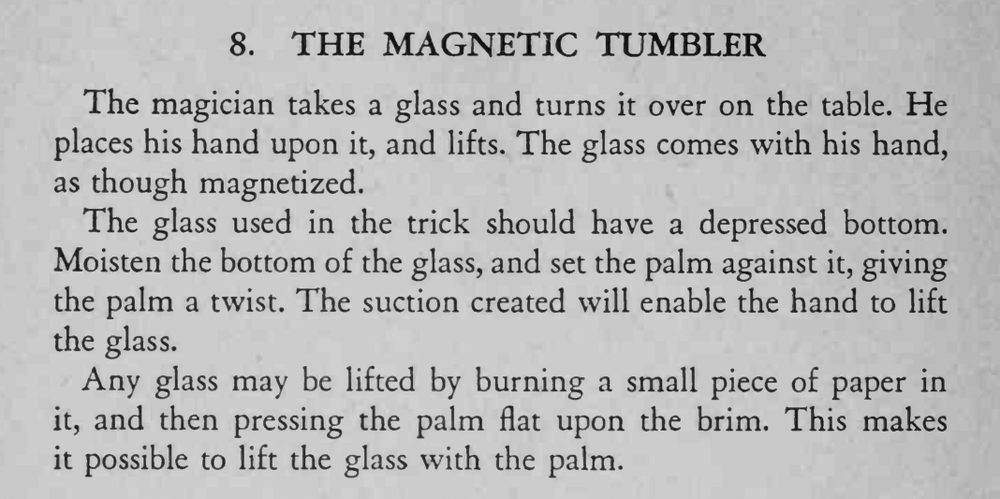

玻璃杯倒扣在桌上，魔术师把手掌按上去一抬，杯子像被磁铁吸住一样跟着手起来。
杯底要内凹、贴合要严，湿杯或烧纸法都要趁热压紧。

The magician takes a glass and turns it over on the table. He places his hand upon it, and lifts. The glass comes with his hand, as though magnetized. The glass used in the trick should have a depressed bottom. Moisten the bottom of the glass, and set the palm against it, giving the palm a twist. The suction created will enable the hand to lift the glass. Any glass may be lifted by burning a small piece of paper in it, and then pressing the palm flat upon the brim. This makes it possible to lift the glass with the palm.